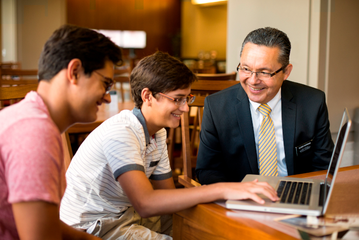

Missionary
Along with the lodging, we have special areas for you to learn more about how The Church of Jesus Christ of Latter-Day Saints can help you find your anscestors and build your family tree. And if you already have one family tree you have previously started, we can easily upload it into FamilySearch and work on it to make even more connections. All this service is free of charge, the acces to FamilySearch is also free, only being necessary a previous contact so we can arrange with our missionary volunteers to let them know.
There are some computers and laptops available at each lodge. Still, we recommend you to bring your own computer just in case our computers are all being used at the time you come. This service can also be held online using platforms such as Zoom. All of this is done with your accommodation in mind. If you are interested in the temple missionary service, check the option under the Reservation page. Start filling out your reservation request bellow:
 Back to Services Reserve Now